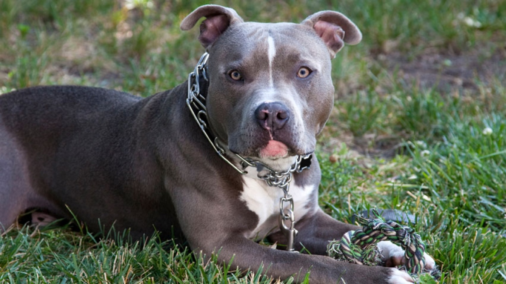

Due to their athleticism and diverse breeding background, APBTs tend to be strong and muscular, with good
skeletal formation. They have an average
lifespan of 12 to 14 years, longer than many breeds of a similar size. There are some genetic conditions to
be
watchful for. The breed is generally healthy, but can have problems with hip dysplasia, cataracts, and heart
disease. Other health ailments seen in APBTs include thyroid and congenital heart defects.

Genetic Predispositions
Hip dysplasia
The breed tends to have a higher than average incidence of hip dysplasia. You’ve probably heard of hip dysplasia,
an inherited disease that causes the hip joints to form improperly and leads to arthritis: it is common in
American Pitbull Terriers. You may notice lameness in the hind legs or difficulty getting up
from lying down. Surgery is sometimes considered in severe and life-limiting cases of hip dysplasia. While this
condition is largely hereditary in these breeds and particularly affects older dogs, keeping your companion at a
healthy weight will greatly reduce the chances of this condition.
Mange
Demodex is a microscopic mite that lives in the hair follicles of dogs. All dogs have them. Normally the
immune system keeps the mites in check, but some breeds, like the APBT, develop an overabundance of these
mites. In mild cases, pet owners may notice a few dry, irritated, hairless lesions. These often occur on the
face or feet and may or may not be itchy. Secondary skin infections may occur. Prompt veterinary care is
important to keep the disease from getting out of hand. Many pets seem to outgrow the problem, while others
require lifelong management.
Thyroid
Hypothyroidism is another illness APBTs are prone to. When the thyroid glands fail to produce enough thyroid
hormones, the dog will start to gain excessive weight and develop skin diseases. Aside from the physical
manifestation, hypothyroidism can also induce fearful aggression and other drastic behavioral changes. Thyroid
diseases are diagnosed through a blood screening test on the vet’s lab. Most cases of hypothyroidism can
be managed through the administration of synthetic thyroid hormones called thyroxine.
Allergies
They are very prone to allergies, more so than other breeds. It can range from grass and pollen to
fleas or ticks. They are also notorious to food allergies, especially to products with wheat or grain
components. Usually dogs with allergies will lick, scratch, drool, and shed more than usual. Incessant
scratching can lead to wounds and bleeding. If it’s not treated right away, skin
infections may ensue.